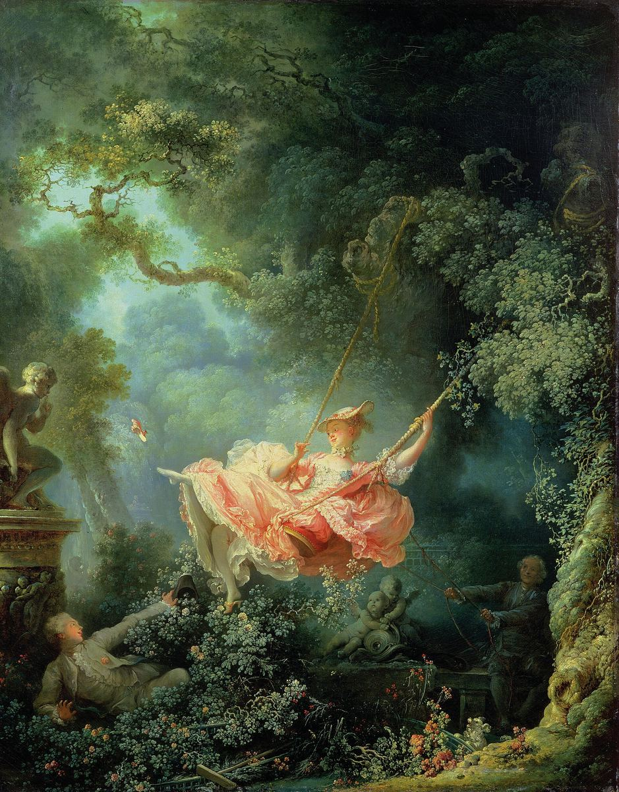

The Swing

Palette
- Black · your word: Black
- Black olive · your word: Hunter green
- Dark olive green · your word: Hunter green
- Moss · your word: Moss
- Sage · your word: Sage
- Café au lait · your word: Ochre
This photo shows the picture before its 2021 cleaning, when it still sat under yellowed varnish and old overpaint not removed in over a century. The cleaning brought back crisper whites and pinks in the dress, a pinker face for the young man and a shimmering blue in the older man's clothes. Even here, see how the one warm note, the dress, is framed by sage and near-black greens.
Image
Wikimedia Commons · Public domain

Hex values are screen approximations. Every page lists its sources.